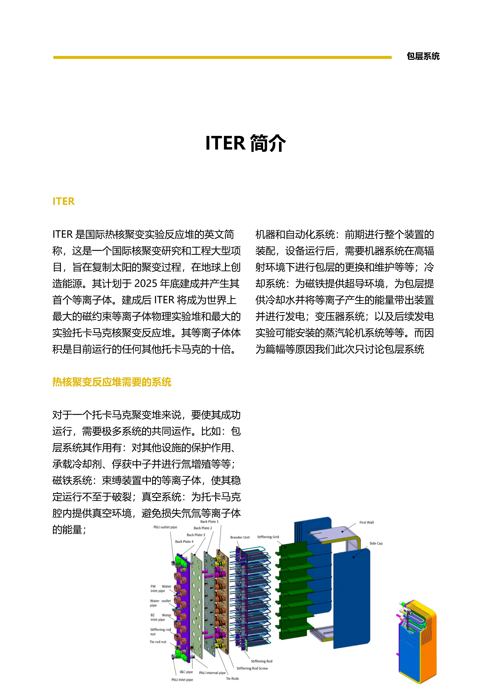
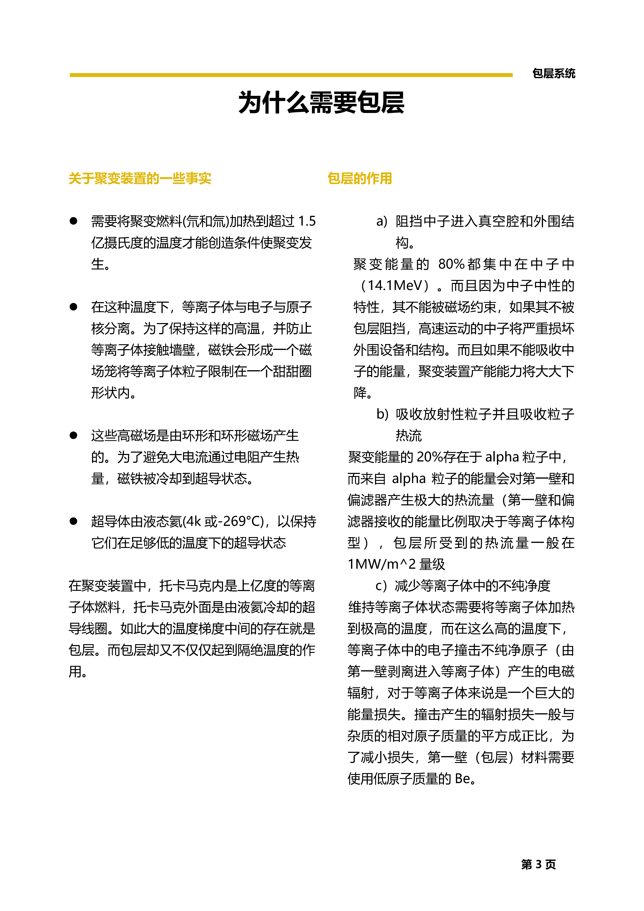
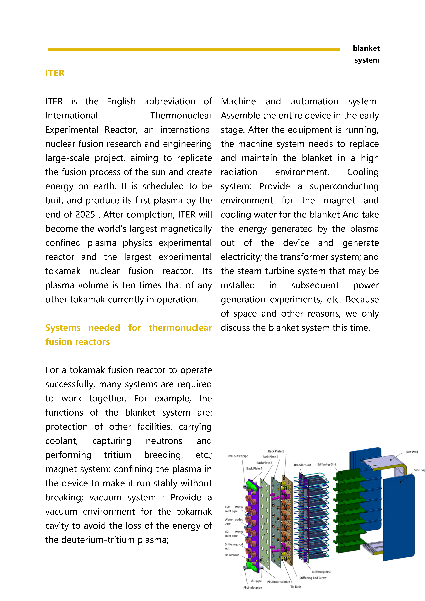
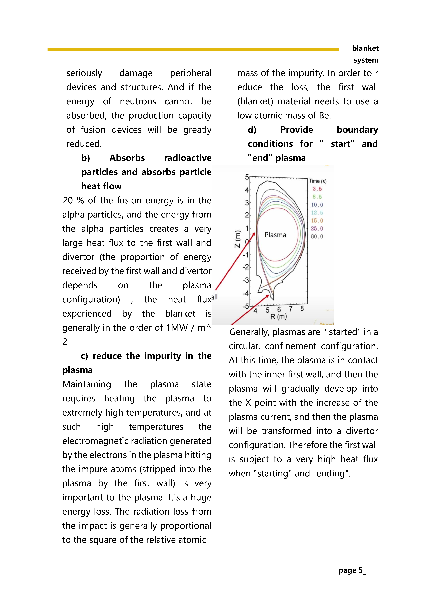
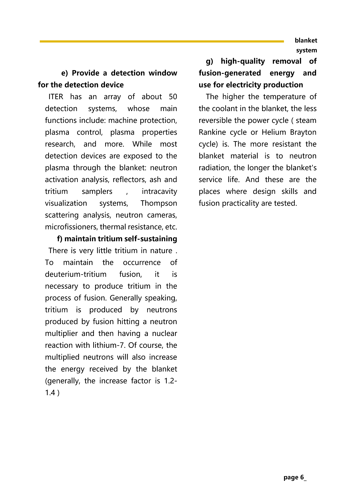
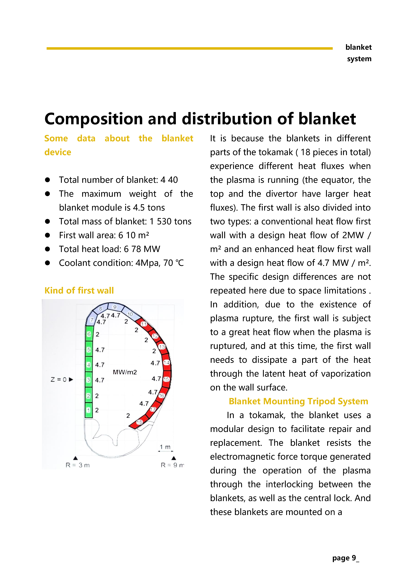
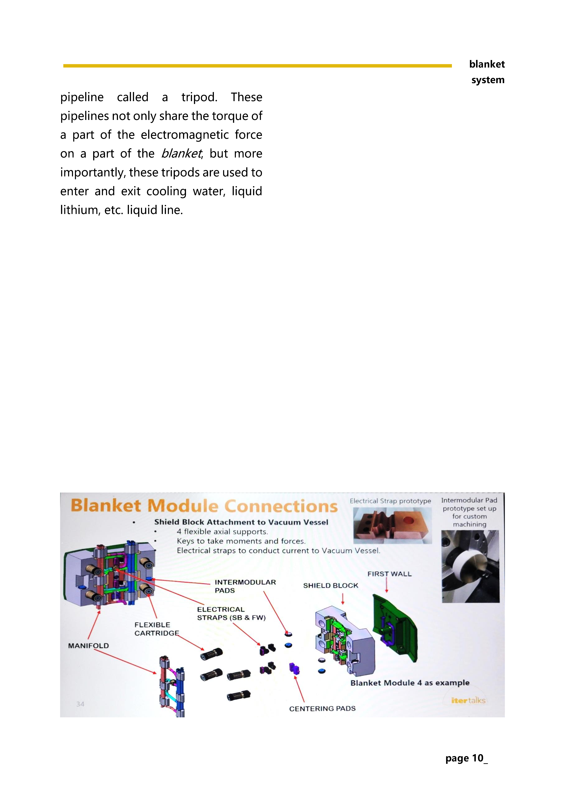

Reference：https://www.youtube.com/watch?v=-pLdtF0fJRE&t=1183s
（ITER Talks (2): The ITER Blanket System by iterorganization）
The artical was originally written in Chinese and has been translated by Google. English Ver maybe inaccurate.











